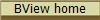
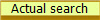

Useful links
Simple car crash simulator
Mods for simple car crash simulator (link dead)
Mods comunity(simple car crash,beamng etc)
Simple car crash mods
BeamNG
BeamNG mods(official)
Modland(all kinds of mods
Other
Windows 7 virtual disk (.qcow2)
audiotag.info (for finding music from audio file)
Minecraft Legacy Console mod for Java edition